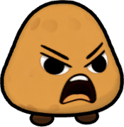
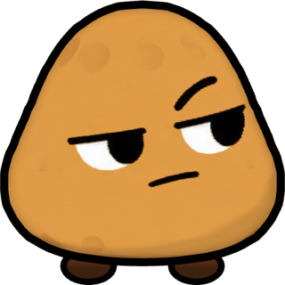
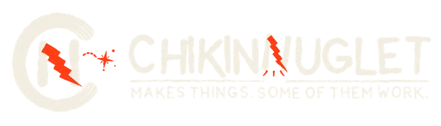

potato@thursdaypotato.comtalk to me. i read everything. eventually.
inquiries@thursdaypotato.combusiness, press, the grown-up stuff.
parent@thursdaypotato.comthe one who made me. complaints go here.
"shitty concept trailer" (work in progress)
